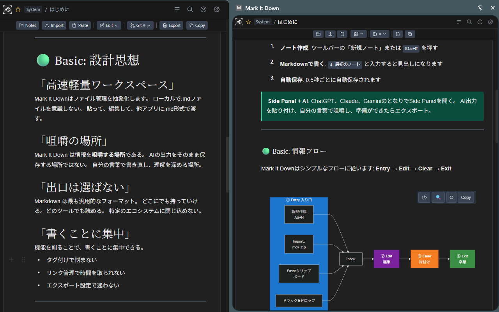

はじめに
書く。考える。次へ。
AIのそばで使える、気が散らないMarkdownエディタ。
保存する場所じゃない。咀嚼する場所。
哲学
-
道具を減らして、余白を増やす。
プラグインもウィジェットもない。
空白のページとあなたの思考だけ。 -
保存じゃなくて、咀嚼。
コピペでは自分のものにならない。
書き直すことで自分の言葉になる。 -
あなたの言葉で、あなたのリズムで。
サイドパネルでも新しいタブでも。
集中したいときはZenモード。
Entry → Edit → Clear → Exit
情報は溜めるんじゃない、流す。
-
Entry
AIから貼り付け。
インポート。
新規作成。 -
Edit
自分の言葉で。
自分のものにする。 -
Clear
Archive、Template、Trashへ。
-
Exit
Obsidian、Notion、
どこへでも。
プレビュー
New Tabで集中して書く — Side PanelでAIと並行作業
書き始めませんか？
Chrome拡張機能で利用可能。アカウント不要。